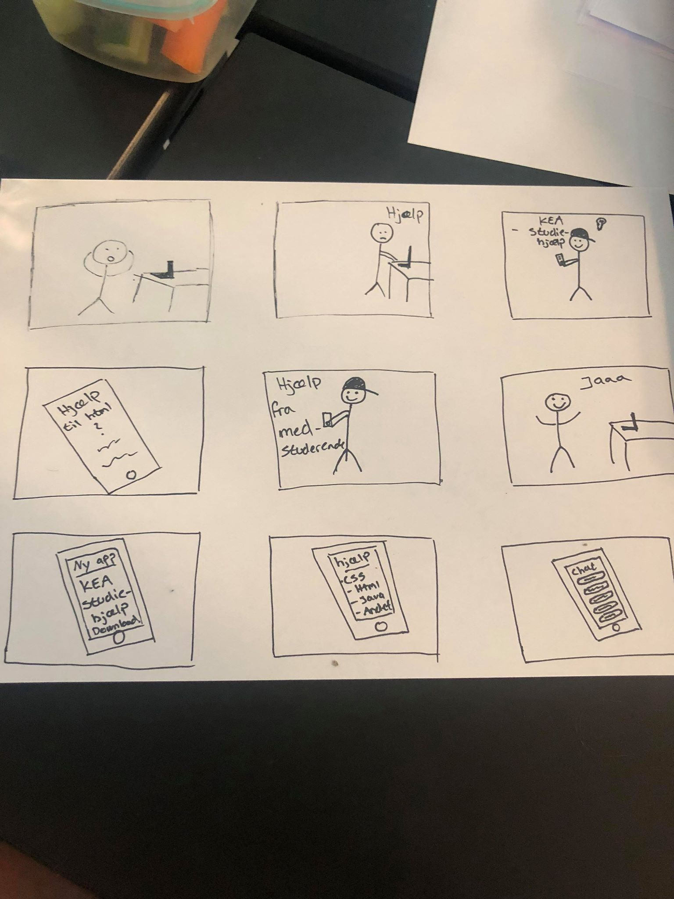
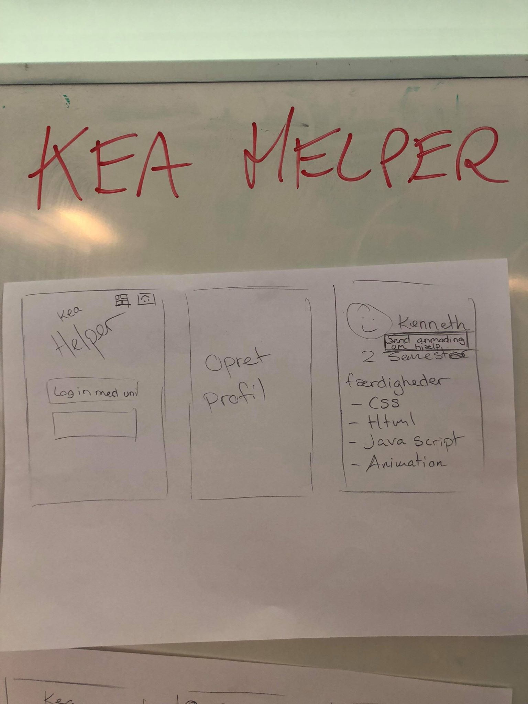
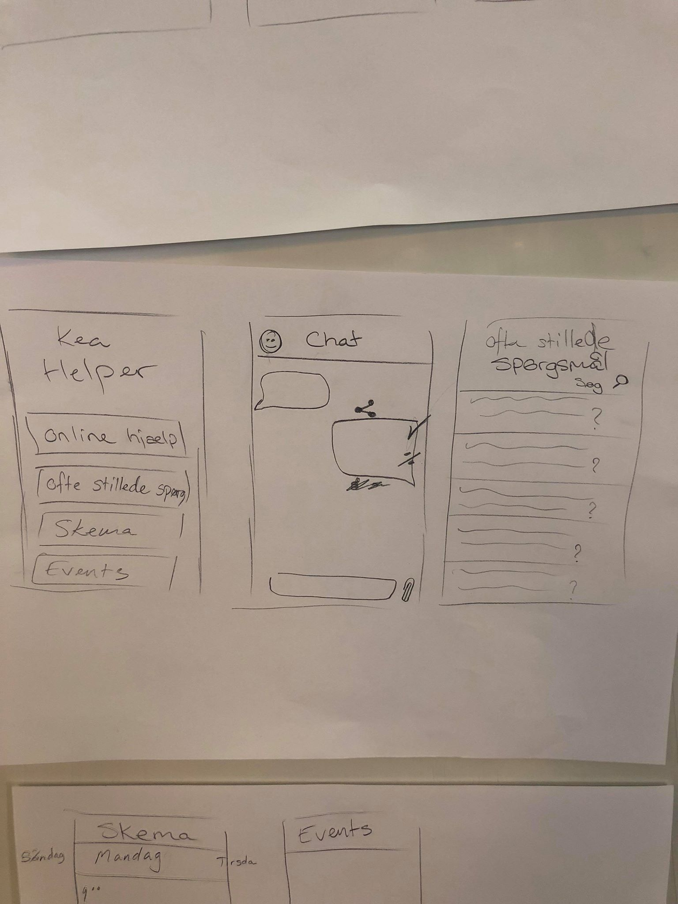
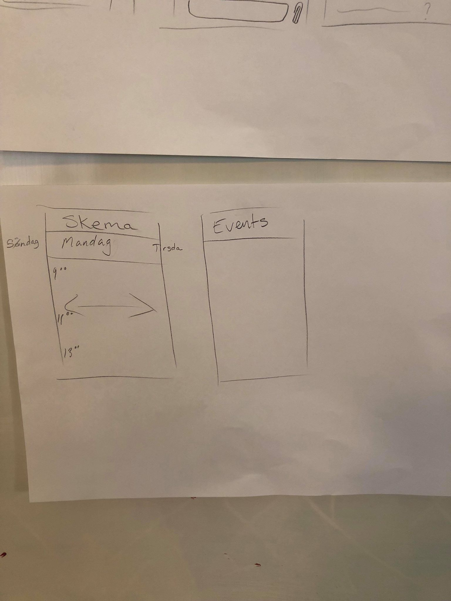

Dokumentation af design Charette
Første skitse af appens indhold:

- Studerende har brug for hjælp.
- Kan ikke finde hjælp på nettet, downloader App (KEA Helper).
- Kan spørge medstuderende om hjælp, til forskellige spørgsmål.
Indhold på appen:



- Appen: KEA hjælper/Helper.
- Log ind med uni-login og derefter skal der oprettes en profil.
- Man kan på sin profil, skrive hvilke færdigheder man har og så står der hvilket semester man går på.
- Man kan stille spørgsmål om hjælp i åbent forum.
- Man kan skrive privat til en medstuderende på deres profil.
- Man kan læse ofte stillede spørgsmål og svar.
- Give feedback på svar/hjælp, til det spørgsmål man har stillet.
- Man kan tjekke dagens skema og swipe videre og se den forkommende uge.
- kan også se kommende evnets, som for eksempel kurser i eksamens angst, fredagsbar og andre kursus.